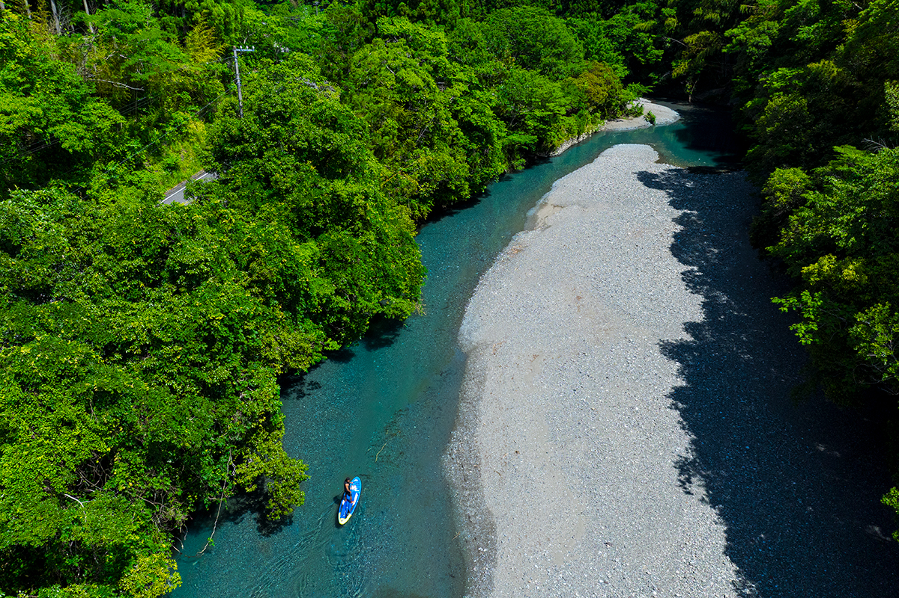
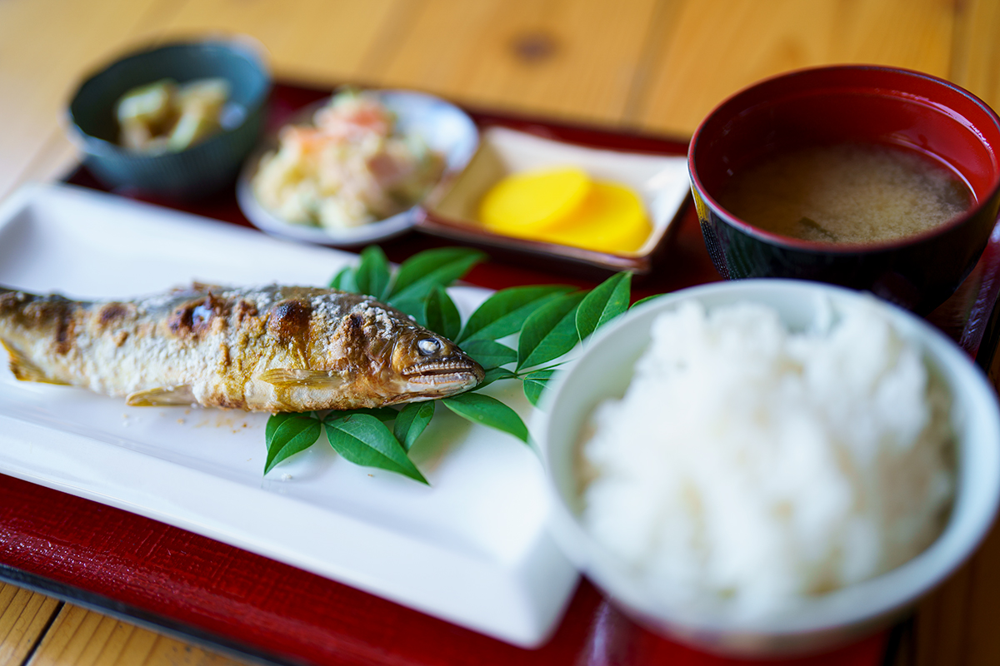
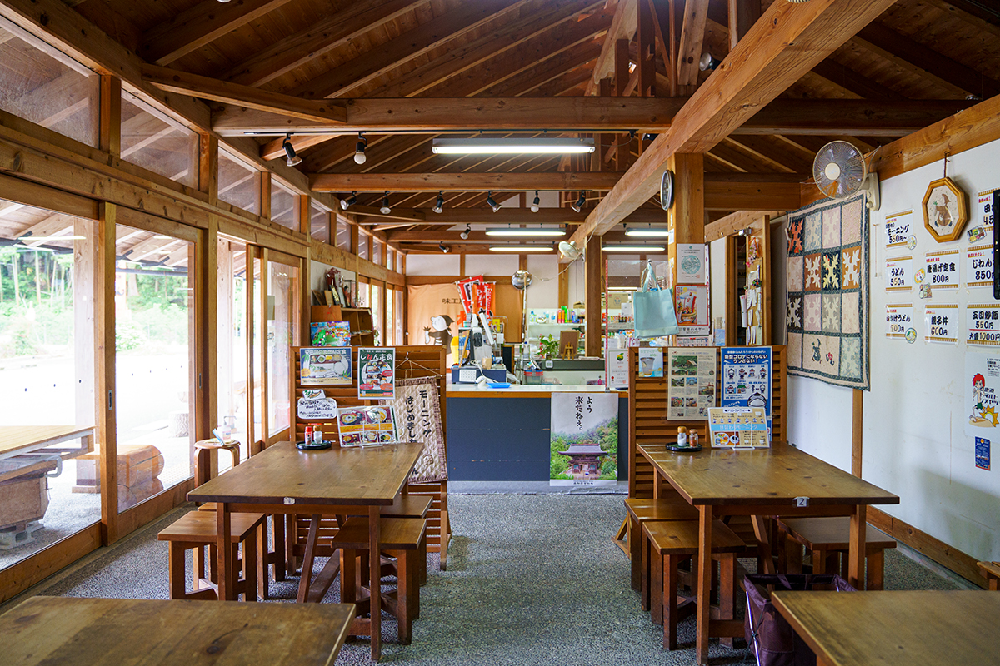
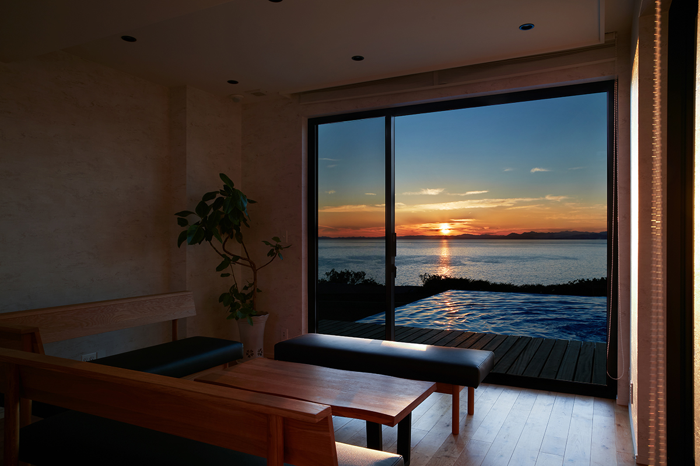
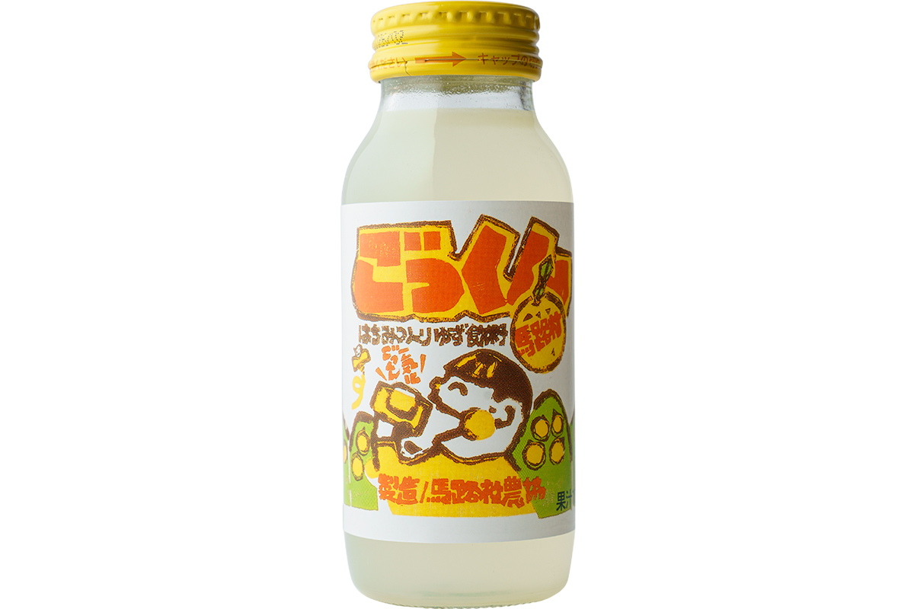
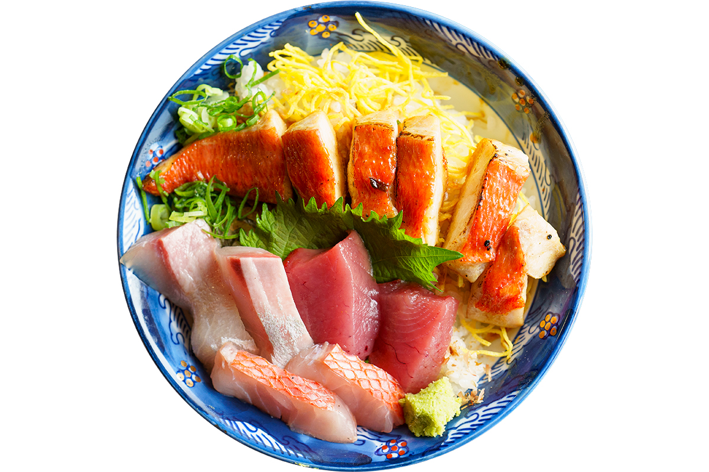

Префектура Коти · река Монобэ · активный отдых и еда
Джангл-круиз по реке Монобэ: сапборд, аю и «Монобэ-грин»

Коти умеет удивлять культурными впечатлениями. Здесь расскажем про речную: как проплыть сквозь джунгли на сапборде и почему местную воду называют изумрудной.
Река под пологом леса
Плыть сквозь джунгли
Симанто и Ниёдо знамениты на всю страну. Третьей по величине рекой префектуры идёт Монобэ: она берёт начало в горах на севере префектуры, и девять десятых её бассейна занимают горы. «Когда плывёшь на сапборде под пологом деревьев, это настоящее джунглевое ощущение», смеётся инструктор, которая ведёт «джангл-круиз» по Монобэ. «В ясную погоду вода от зелени берегов становится ярко-изумрудной. Так и хочется назвать её „Монобэ-грин“, в паре к „синеве Ниёдо“». У каждой реки здесь свой цвет, и в этом вся щедрость котийских рек.
«В ясную погоду вода от зелени берегов становится ярко-изумрудной. Так и хочется назвать её „Монобэ-грин“, в паре к „синеве Ниёдо“».
инструктор круиза
Аю из Ясуды
Рыба, которая побеждала на конкурсах
Своя речная история и у деревни Умадзи: её Ясуда-гава невелика, но это одна из главных чистых рек востока префектуры. Ни одной плотины по руслу, живая речная среда, а потому рыба здесь изобилует. Особенно славится аю: на конкурсах, где сравнивают аю со всей Японии, ясудский брал главный приз. Когда открывается сезон ловли, берега оживают: силуэты рыбаков в воде сами по себе часть здешней речной культуры.
Море, горы и реки восточного Коти щедро насыщают путешествие авантюрным духом. Поездка получится такой, что забудешь её не скоро.
Остаться подольше
Три адреса для долгой поездки
Столовая «Адзикобо Дзинэн»
Столовую и лавку при ней держат местные женщины. Гвоздь меню: сет с натуральным аю из реки Ясуда, от 1600 иен (цена зависит от размера рыбы), с солёным аю на решётке: мясо нежное, горчинка внутренностей в самый раз. Рыбу подают круглый год. Кроме него, здесь есть «дзинэн-дон» с воздушным горным ямсом и деревенские суши со свежим уксусом юдзу.


Вилла VILLA URARA THE COAST
Дом у океана целиком для одной компании, принимающий лишь одного гостя в день. Открыт в 2022 году: бассейн с видом на синюю воду, деревянная палуба для барбекю, три спальни.

Цех «Юдзу-но мори»
Умадзийский юдзу знают по всей стране: деревня делает ставку и на органическое земледелие, и доля органики здесь первая в Японии. На заводе, где разливают «Гоккун Умадзи» за 140 иен и другие напитки, можно зайти с экскурсией: запах цитрусового сада обеспечен.

«Кинмэ-дон» в рётэй «Кагэцу»
Мурото: одни из богатейших в стране промысловых мест кинмэдай. В старинном рётэй «Кагэцу» берут местный «кинмэ-дон» за 1800 иен: сашими из кинмэдай, кинмэдай в глазури и сашими из местной рыбы дня.

Джангл-круиз по Монобэ
- Адрес
- префектура Коти, город Ками, посёлок Кахоку, Нисиминэ, 1 (место сбора)
- Телефон
- +81 80-1999-0078
- Часы работы
- 9:00–13:00
- Выходные
- нет
- Цены
- от 8000 иен
- Как связаться
- вопросы принимает компания HALO (префектура Коти, город Ками, Тоса-ямада-тё, Хякусикимати, 1-6-28)
Адзикобо Дзинэн
- Адрес
- префектура Коти, уезд Аки, посёлок Ясуда, Масахиро, 566
- Телефон
- +81 887-39-2366
- Часы работы
- 7:00–17:00 (кухня до 14:00)
- Выходные
- третий четверг месяца
- Сайт
- Instagram: @jinen_yasuda
VILLA URARA THE COAST
- Адрес
- префектура Коти, город Аки, Ако-ко, 899-19
- Номера
- дом целиком, одна компания в день
- Цены
- от 39 800 иен за ночь без питания (налоги и сервис включены)
- Карты
- AMEX, DINERS, JCB, VISA и другие
- Заезд / выезд
- с 15:00 / до 11:00
- Как добраться
- на машине: около 20 минут от аэропорта Коти-Рёма; на поезде: около 5 минут на машине от станции Ако линии Тоса-куросио
- Сайт
- villaurara.jp
Юдзу-но мори (цех переработки)
- Адрес
- префектура Коти, уезд Аки, деревня Умадзи, Умадзи, 3888-4
- Телефон
- 0120-559-659 (бесплатный номер, звонки только из Японии)
- Часы работы
- 8:30–17:00
- Выходные
- нет
Рётэй Кагэцу
- Адрес
- префектура Коти, город Мурото, Муроцу, 2586
- Телефон
- +81 887-22-0115
- Часы работы
- 11:00–14:00; в субботу, воскресенье и праздники с 10:30
- Выходные
- без фиксированного расписания
Фото: Томоаки Окуяма.